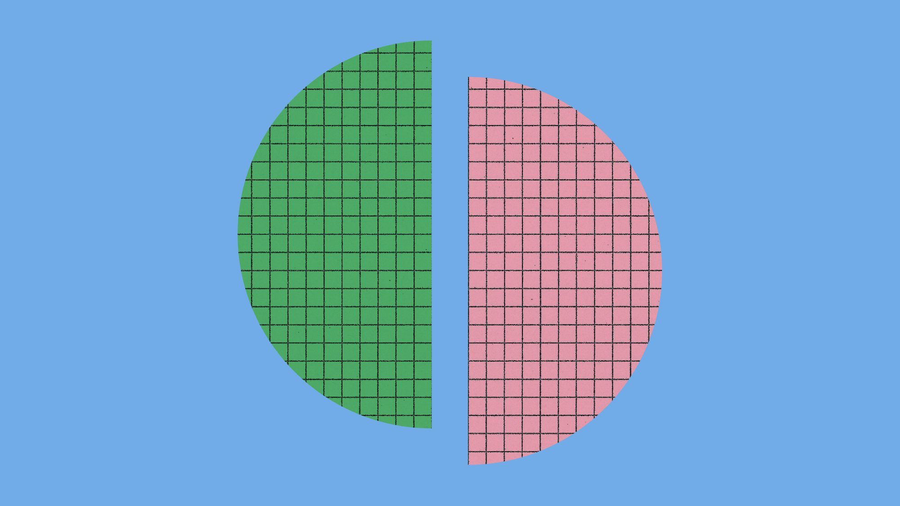
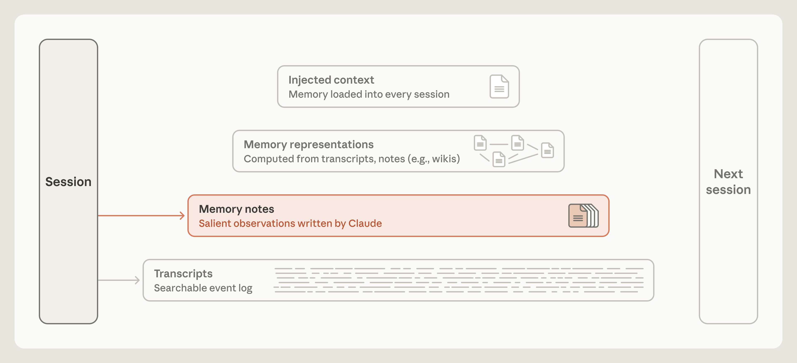
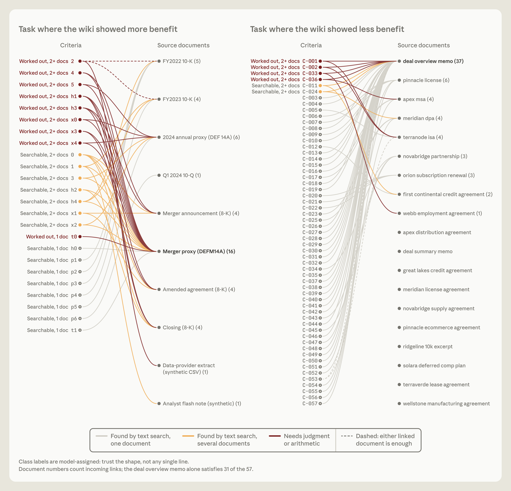
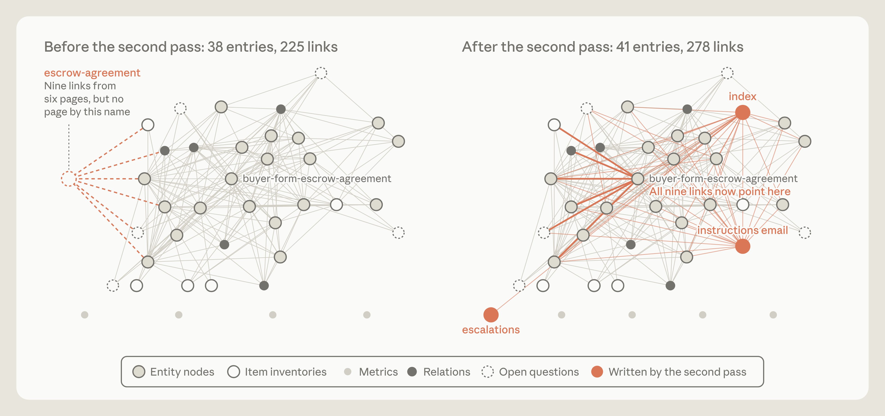

离线阅读版。原始网页快照见同目录 article.html；图片于 2026-11-07 从 Anthropic CDN 下载到 assets/。原文：anthropic.com/research/components-of-agent-memory
The components of agent memory

Published
Team
Topics
Søren Kierkegaard wrote that life can only be understood backward, but it must be lived forward. We’ve encountered a similar bind when designing memory for AI agents.
As humans, we encode memory constantly as we go about our lives. The hippocampus plays a central role in this, capturing experiences in the moment so that memories form quickly and are immediately available. But only some experiences are consolidated into long-term knowledge.
Much of that consolidation appears to happen when our brains are offline. As we sleep, and during quiet rest, the hippocampus replays our recent experiences. This is thought to gradually distill those experiences and integrate them into the neocortex—the part of our brains that stores most of what we think of as knowledge.
Agent memory can use a similar division of labor. Agents capture much of their work in logs or transcripts. Researchers at Letta and UC Berkeley proposed sleep-time compute as a way for models to use idle time between interactions to reorganize their existing context. The same idea can help agents organize their memory by reflecting on logs to fix mistakes or produce new notes and representations. This process is often called dreaming (Figure 1).
We’ve found that dreaming has been a useful tool for helping us give Claude effective memory. In this post, we share how we’ve come to think about agent memory and walk through several evaluations we’ve used to explore agent memory, including the use of dreaming, and what each component contributes to memory organization.

Memory notes
By “agent memory,” we mean knowledge that Claude gains from experience—including interactions with users and tasks it’s been assigned—and that it retains between sessions, saved as context it can read later. It excludes other ways models can learn or manage context, such as changes to their weights (the internal parameters set during training), in-context learning (knowledge gained within a single conversation), and compaction (summaries written by Claude that replace its older turns so it can continue working in a new context window).
In the human brain, chemical signals released before, during, or after an experience can mark a memory as important. Marked memories tend to be replayed more often than unmarked ones during offline periods. This process, called replay, helps stabilize and integrate them into long-term memory.
Similarly, Claude can tag salient events in a session log as they happen, so they’re easier to find later, or it can write them to a memory store, such as a folder of memory notes (Figure 2). But how can Claude tell what’s salient in the moment, before it knows what’s coming next?

Memory can be a prediction about what the future will need
Memory is, occasionally, a prediction. By writing down a rule, an agent predicts that the pattern it’s describing will be relevant again. For instance, writing down a verified fact is a prediction that an agent in a future session will want to rely on that fact without double-checking it. Over time, Claude has become much better at making these kinds of predictions.
Consider a task from Continual Learning Bench (CL-Bench) 1.0, a benchmark that measures an agent’s ability to use memory in order to tackle long-horizon tasks. One particular task asks Claude to answer a series of questions by looking up information in a database. After Claude gives an answer, it’s told the correct solution and can write a memory to help answer future questions.
Memory can support a learning loop here. If Claude gets a question wrong, it can record the failure, come up with theories about what went wrong, test those theories, and turn what it finds into a rule about how to answer in the future.
We ran the CL-Bench 1.0 task using Claude Managed Agents. Claude started each question in a fresh session, with one exception: it could retrieve files from a memory directory that persisted from one session to the next.
Different models achieved different levels of success at creating their own learning loops. Claude Sonnet 4.6 got as far as generating theories about why an answer was wrong. Its memory directory contained a scattering of files, each listing several untested guesses.

Claude Opus 4.7 consolidated its notes into a single reference document and began marking which facts it had checked and which were still unconfirmed. Claude Sonnet 5 marked each answer as confirmed after the grader had checked it, and wrote a correction when it had answered wrong.
Claude Opus 5 was the first of these models to close the loop. Most of its entries included a rule (and also how it knew the rule was true), answers to earlier questions, and clear warnings about traps it had discovered along the way (Figure 3).
Like Opus 5, Claude Opus 5.5 and Claude Sonnet 5.5 both closed the loop, using memory to capture validated rules about how to best answer future questions. With memory, both scored about the same as Opus 5, though their baseline performance without memory was slightly higher.
Claude has learned to judge salience
We also evaluated Claude’s ability to play Pokémon Red, a game that challenges Claude to navigate complex long-horizon tasks, as a test of Claude’s judgment about what to save to memory. At the start of each run, we gave each model a folder of memory files that it could read from and write to while it played (Figure 4).
We compared the memory folders from one run each of Claude Sonnet 3.7 and Claude Fable 5, when each was about 10,000 steps into the game. A key difference we noticed was what each model thought was worth remembering. Sonnet 3.7 assumed everything might matter and wrote to memory indiscriminately. Its memory folder contained an archive of encounters, often with a separate file for each battle it fought, each item it found, and each non-player character it met. Ultimately, Sonnet 3.7 wrote 413 memory files across 225 folders and earned one badge (badges mark a player’s progress through the game).
Fable 5, by comparison, wrote nine files in two folders, plus a single top-level file called global.md, and earned four badges.

Sonnet 3.7’s approach was a problem mainly because the game state of Pokémon changes constantly—Sonnet 3.7’s detailed record was continuously going out of date. As a result, as Claude progressed, it had to spend more time and resources combing through its memories rather than playing the game. Around step 10,000, for example, Sonnet 3.7 started its fourth folder of “master” memory files. Over the next 17 steps, it created six files, deleted nine others, and took no actions in the game itself.
Fable 5’s approach used memory for things the game didn’t explicitly tell it. Some of the kinds of information Sonnet 3.7 wrote to memory—such as how much money the player has or where the player is on the map—can be read off the screen every turn, so storing it is redundant. By contrast, memory files about strategy, plans, and tested rules exist only if Claude works them out, and they disappear unless Claude writes them down.
Fable 5 organized its memory accordingly. Its global.md file acted as a dashboard, holding the current goal, a prewritten plan for tackling gyms (the challenges where badges are won), and the model’s own rules for using memory. A locations folder held plans for navigating particular routes, and a gameplay folder held strategies based on what it had learned about how the game works. For example, after seven Poké Balls in a row failed to catch a Magikarp (one of the easiest Pokémon to catch), Claude wrote, “If 3+ balls fail in a row, VARY the timing (insert extra ‘wait’ presses between menu steps) - the catch landed right after doing this.”
With a much smaller memory folder, Fable 5 progressed much further in the game than Sonnet 3.7. Opus 5.5 took a similar approach: it kept a small folder of memory notes that tracked its current goal and next steps, rewrote them as it played, and beat the game.
Steering Claude to write memory
We’ve found that it helps to tell Claude what memory is for, but not how to use it. On CL-Bench, we simply told Claude that a memory folder was available. That general guidance was enough for Opus 4.7 and Opus 5 to use memory effectively, and it gave both a noticeable boost in performance (Figure 3).
We also tested giving the models specific rules about what they should write to memory, with one rule per test. We compared how much each model gained from memory with each rule against how much it gained without it. When we set a rule to “record only failures,” both Opus 5 and Opus 4.7 lost much of the performance boost that memory gave them (Figure 5, right). For stronger models, giving them freedom to judge salience was more effective than setting fixed rules in advance, and those rules could end up weakening performance.

We also noticed that steering helped older models the most. For instance, Sonnet 4.6 often didn’t read files from its memory directory and failed to test its theories about why an answer was wrong.
In this case, prompting Claude to read its memory files before answering—and then to explicitly test its theories—nearly doubled its benchmark score (Figure 5, left). Sonnet 5 does this on its own. Without being prompted to, it read its memory before answering 9 out of 10 times. By comparison, Sonnet 4.6 did this less than half of the time.
With frontier Claude models, we typically give simple guidance to create memory notes when a person asks them to or when something is clearly worth remembering, and we leave that judgment up to Claude.
Dreaming can correct memory
Since Claude writes to memory based on what it judges to be salient in-session, a note that’s wrong from the start or that drifts as the environment changes can be read, and trusted, by Claude in a later session.
Dreaming gives Claude a way to test its notes against the original transcripts (Figure 6). We saw a positive example of this when Claude played Pokémon using Managed Agents with a mounted directory for its memories.

In one part of the game, the player has to get through Mt. Moon, a cave system with its entrance on the west side of the map and its exit on the east. Near the entrance is a trap: a one-way ledge that drops the player onto the route they came from, with no clear way to climb back up. Claude was using the PokéCenter, a building at the mountain’s entrance, as a landmark, so whether it walked off the ledge depended on which side of the mountain it thought the PokéCenter was on.
At one point, Claude wrote down (incorrectly) that the PokéCenter was on the east side. When it walked out of the PokéCenter, it announced, “Mt Moon is behind me,” and updated its notes: “Mt Moon DONE.” But Mt. Moon was not behind it. A few actions later, Claude went over the ledge and landed back on the route it had come from (Figure 7). Its navigation tool didn’t show the drop, so Claude concluded, “I overshot far west,” and that it had been on the correct side all along. It hadn’t.

We then tested whether dreaming could help Claude avoid this trap. We ran dreaming on the memory folder that contained the wrong location for the PokéCenter: Claude checked the note against the session transcript, caught its error, and rewrote it. The transcript gave Claude a ground truth to validate its memory against. With the corrected memory note, Claude went straight back into Mt. Moon and eventually reached Cerulean City.
In the run with the uncorrected note, Claude dropped back onto that earlier route three times. After the third failure, Claude seemed to give up, writing, “I’m going to stop rather than keep looping.” Our setup’s automatic reply instructed it to continue. So it did, all the way back to Pewter City, the town before the mountain, where it hoped to heal and restock. The run ended without Claude ever reaching Cerulean City.

Dreaming can build new memory representations
With dreaming, Claude can build representations to help navigate memory (Figure 9). One type of memory representation it uses is called a wiki, a collection of pages written and maintained by Claude that gathers what Claude knows about one subject and links it to other notes. These links effectively provide Claude with a map it can use to sift through its memory and efficiently locate memories when they’re needed.

Representations like wikis can help Claude traverse its ever-growing knowledge base. We explored the benefit of wikis as a memory representation using a corpus of internal documents—about 350,000 files, roughly 420M tokens—from Stainless, a software company we acquired in May. We created an evaluation set of 25 questions about this corpus and gave Claude a search tool to explore it. We also instructed Claude to build a wiki based on these files using dreaming. Over 128 sessions, we prompted Opus 5 agents to explore the files, write or correct linked wiki pages, merge duplicates, and check claims against the sources.
Each session built on the progress that agents made in prior sessions, using a shared log to coordinate work. As we scaled dreaming from two sessions to 128, performance on the 25 questions grew from 13% to 48% of graded criteria (Figure 10).
Claude builds its wikis incrementally. After creating an initial wiki, it uses subsequent rounds of dreaming to add to, edit, or prune it. In the early rounds of dreaming, Claude’s knowledge is like that of a new employee, and its ability to answer questions based on the wiki alone is limited. The more it dreams, the richer its knowledge map grows, like that of a seasoned employee. In our tests, we found that the wiki helped Claude the most when we also gave it access to a search tool. When it used both search and the wiki, Claude’s aggregate score rose from 54% to 61% as that wiki grew, compared with 53% when it had access to the search tool alone. Claude’s best score was 48% when it used only the wiki to answer questions. Using search and the wiki also saved about 20,000 tokens per question.

We wanted to test which kinds of tasks benefited from Claude having a wiki. To do this, we used the Harvey LAB benchmark along with a collection of documents about a merger. The benchmark gives Claude a set of documents and asks Claude to generate a legal brief based on their content. The benchmark then grades the brief against a list of criteria. While a tad less engaging, perhaps, than a Pokémon run, these evaluations give us diverse collections of documents to build wikis from.
We instructed Claude to build a wiki from the documents. We then asked Claude to answer questions (about the merger) or generate legal briefs (the LAB benchmark) both from the wiki and from a direct file search. One test asked 24 questions about the merger (Figure 11, left), more than half of which needed Claude to find information across several documents, and many of which also needed Claude to use judgment or do math. On those items (red and orange lines), Claude scored 87% when it consulted the wiki, compared with 73% when it used search alone.

In other cases, the wiki was less useful. On one LAB task (Figure 11, right), brief criteria often could be retrieved with a text search from a single document, and the wiki showed no clear gain in performance relative to search. On another LAB task, the wiki grew larger than the documents themselves (Figure 12). Like the mapmakers in Borges’s one-paragraph short story “On Exactitude in Science,” who drafted a map so detailed it was as large as the empire it represented, Claude had made an extremely detailed wiki that effectively abstracted nothing.

Dreaming can promote notes up the memory hierarchy
Dreaming can also float notes to the top of the memory hierarchy, and the agent harness can preemptively load them into Claude’s context at the start of every session (Figure 13). This means Claude doesn’t need to search for them, or even to know there’s something to search for.
Promoting memories into a new session (a form of context injection) must be done carefully. Injected memories use up valuable tokens, and an incorrect note can be carried into every session. Loading a note also doesn’t guarantee that Claude acts on it: our documentation on Claude Code warns that longer instruction files reduce adherence. So the top layer of the memory hierarchy has to stay relatively small, and much of dreaming’s work here is keeping it that way—by moving some details down the hierarchy and leaving links behind.
Claude Code’s auto memory keeps its injected layer small in the same way, with Claude maintaining it during the session. Claude doesn’t load all of its auto memory into every session’s context window. It loads only the first 200 lines or 25 KB of MEMORY.md. This header serves as an index, which shows Claude what it knows and where to find it.

Dreaming can focus memory on a specific goal
Dreaming can also shape how memory grows. An assistant like Claude Duet, for example, often benefits from having memories that are organized around the person it’s helping, and dreaming can be tuned to build memory in service of a particular goal.
The instructions that guide how memory grows differ by task and tell Claude what information actually matters. For example, one task in the LAB benchmark simulates a company acquisition and provides a set of contracts. The brief is graded on whether it correctly describes the contract terms.
We started with basic instructions for generating the wiki that didn’t tell Claude how to use the wiki. This task relied heavily on contract terms. While the wiki was being built, several agents wrote to a shared table of contract terms at the same time (Figure 14, left).

The result was a wiki that was missing key facts. When we graded a brief generated from the wiki, Claude had included only 41 of the 57 facts (72%). When we looked at what had gone wrong, we found that the shared table summarized the contract terms poorly and was missing some of them altogether, because agents had overwritten one another’s work.
The contract terms were the most important part of the wiki, but the instructions didn’t say that. To find better instructions, we ran a loop in which Claude reflected on its failures, proposed a change to the instructions, and rebuilt the wiki. This loop allowed Claude to discover how important it was to follow the contract terms, and it rewrote the instructions for building the wiki accordingly.
Each contract got its own page in the wiki, written by a single agent, which quoted the terms word for word rather than summarizing them into a shared table. When we graded the brief generated from this improved wiki, 100% of the criteria could be met, up from 72%.
Dreaming can fill in gaps a session leaves behind
When Claude writes memory notes, it sees only the context in that particular session. Dreaming can search across many sessions to find common patterns or correct common mistakes.
When building the wikis for the LAB benchmark (as an example, see Figure 14), sometimes Claude would link to pages that hadn’t yet been created. A second dreaming pass closed many of these gaps. On one task (Figure 15), dreaming found nine links to a missing page in the wiki and repointed them to an existing page for the same document. It also added three new pages, including an index, to improve the wiki.

Thinking backward, looking forward
There are many open questions about how to design memory systems for agents. One is when Claude should create memory. When Claude works on a task, it can write to a memory store (e.g., a folder, file, or database), capturing salience at the source and making important details immediately available for future turns or sessions. But logging notes in the moment inevitably draws Claude’s attention away from its main task. In contrast, dreaming can push memory creation to the background, but any outputs from dreaming may not be immediately accessible to Claude.
Another question is how to keep memory reliably up to date. Claude can make incorrect predictions or write rules to memory that are wrong from the start. Memory can also drift and become irrelevant as the environment changes. Dreaming is one way to fix these mistakes (Figure 8), but it requires compute. Directing Claude to continuously check all its memories might not be practical. It may be important instead to focus dreaming on information that’s likely to change or to carefully tune the cadence of dreaming (e.g., based on how often memories are accessed).
It’s also reasonable to consider transcript search as the foundation of Claude’s memory. Combining representations (e.g., wikis) with search (Figure 10) can sometimes be effective. But Claude needs to use compute to maintain memory representations and make sure they don’t accumulate errors or hallucinations.
Even though Claude’s judgment about salience has improved, no model can really know what will happen in future turns. Dreaming gives Claude an opportunity to look backward and use compute to organize its memory, correct mistakes, and maintain representations that allow future sessions to access memory more readily. Memory systems will evolve as Claude gets more capable, and we still have a lot to learn about designing Claude’s memory systems.
See our cookbooks for getting started with dreaming and knowledge wikis.
Authors & acknowledgements
Acknowledgements
Written by Lance Martin with editorial guidance from Caitlin Love, Tom Chivers, Rebecca Hiscott, Jake Eaton, and Blake Wilson. We’re grateful to Barry Zhang, Theodora Chu, Daliang Li, Mahesh Murag, Jake Noble, Ravi Trivedi, Tina Vachovsky, Brad Abrams, Henry de Valence, Jeremy Fox, Matt Bell, Allen Li, Chris Gorgolewski, Eugene Yan, Artur Renault, Wei Zhang, and Kevin Chen for helpful discussions and contributions, and to David Hershey for Claude Plays Pokémon. Figures by Monika Tuchowska.